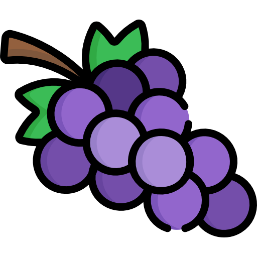

Fruit

grape
Grapes are usually really sweet and definitely a classic option to have it with cheese, so normally all kinds of cheese taste good with it.

Soft cheese
red wine
Strawberry
Strawberries are really sweet but can also be a little bit sour sometimes but they are always juicy.
Strong flavor cheese
rosé wine
damascus
Damascus is extremely juicy, also really sweet and has a light flavor.
Soft cheese
white wine
raspberry
Raspberries are a fresh juicy fruit with slightly crunchy floral undertones blended with woody notes taste at the end.